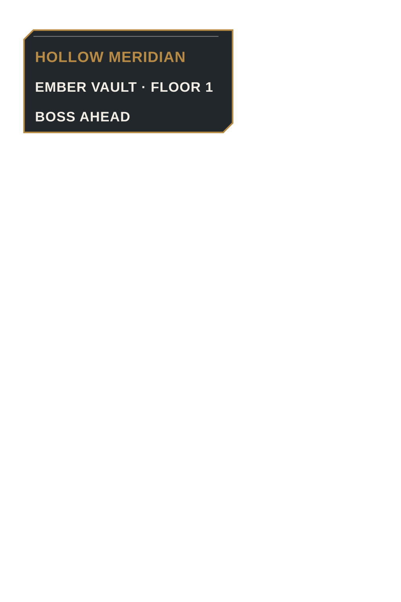
Read the pilot
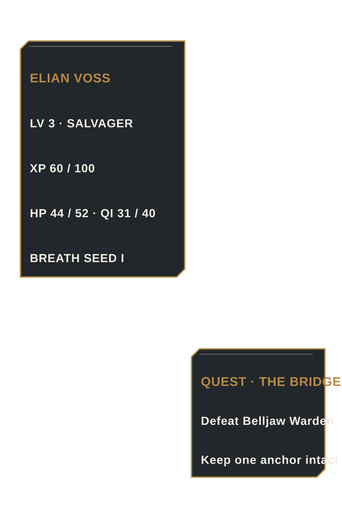
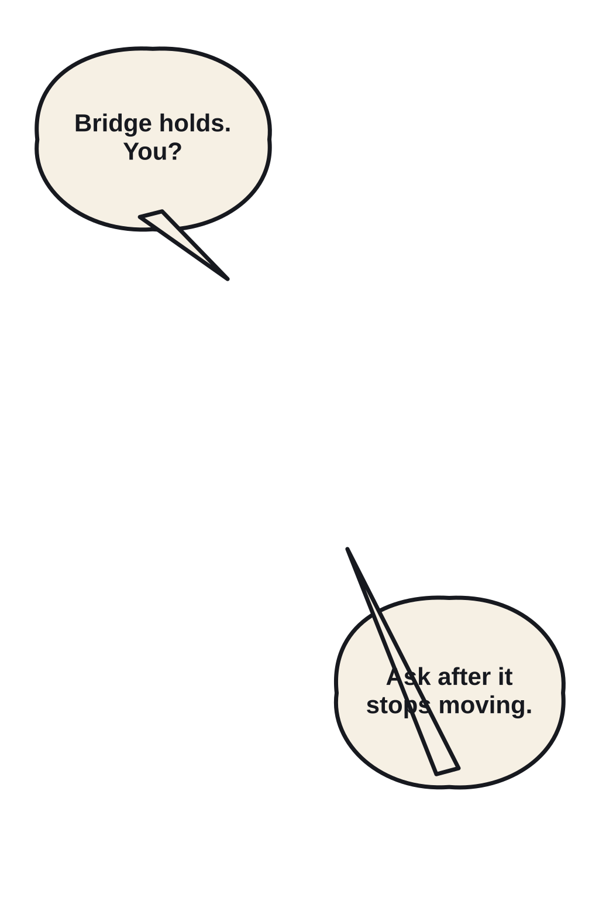
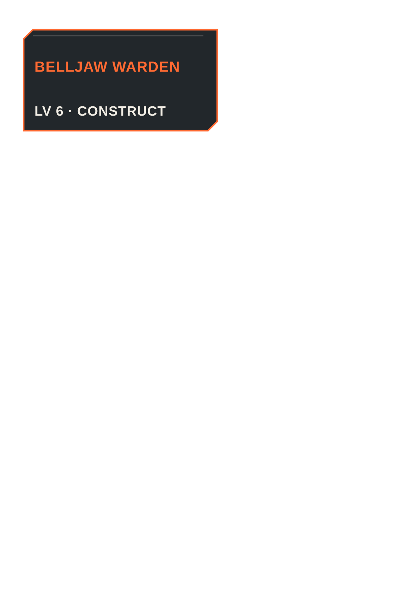
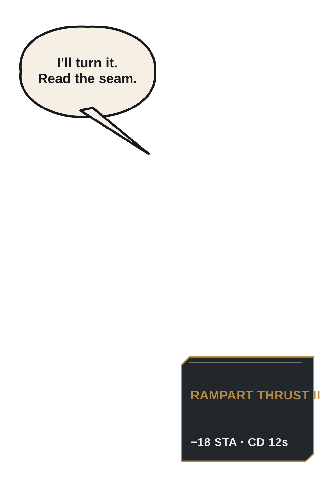
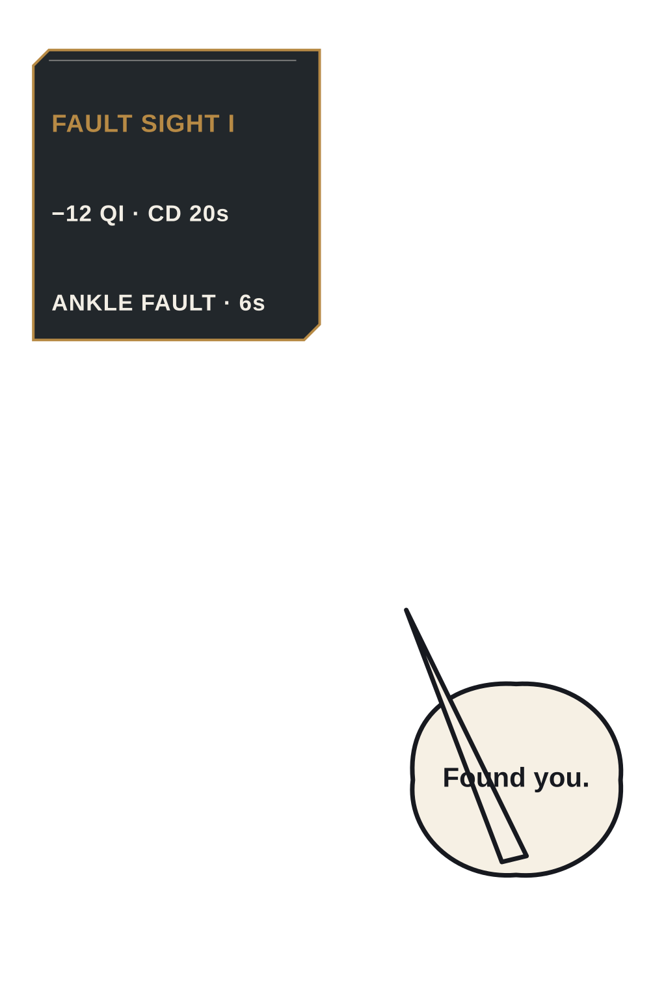
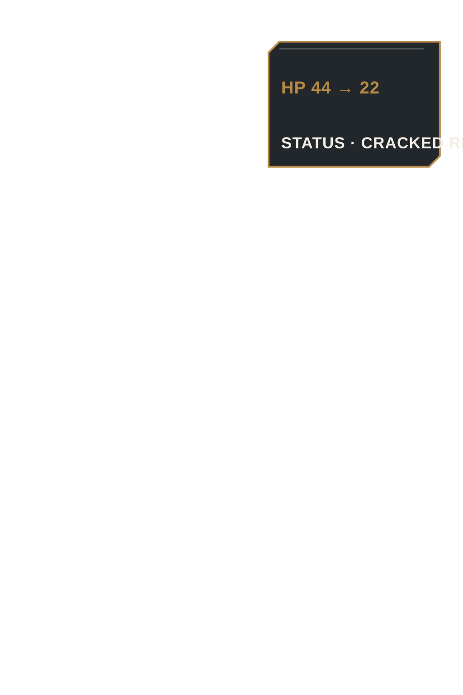
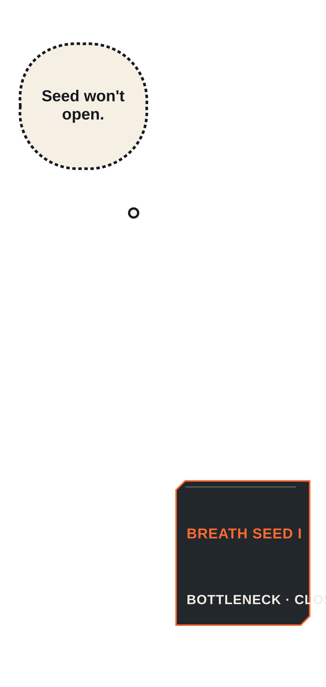
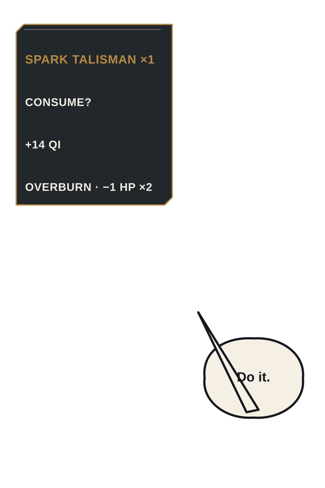
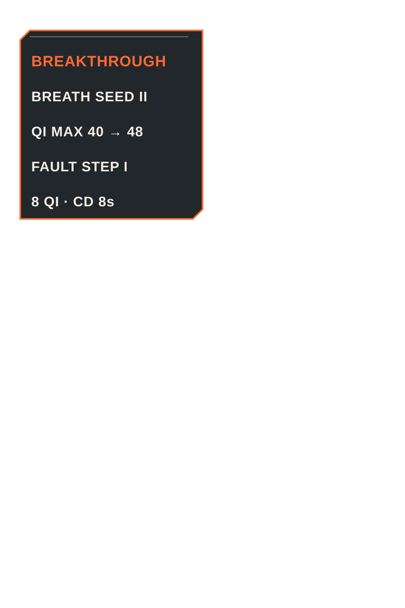
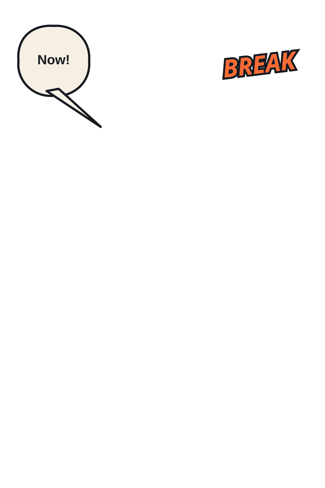
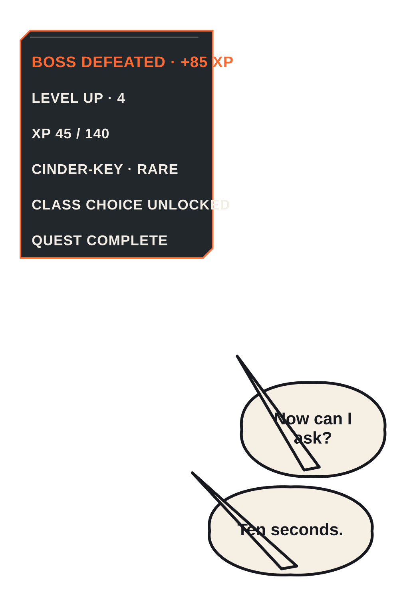
390-pixel continuous phone preview
Consecutive causal action strip · P05–P15
Geography → charge → interception → counter → fault read → initiation → interruption → consequence → inventory choice → breakthrough → combo payoff.
Protagonist appearance and complexion contract

Elian Voss · fictional adult, age 27
Fair/light peach-beige complexion with a warm undertone; ash-blond hair over a charcoal underlayer; green eyes; mature narrow jaw; frayed gray-green coat; asymmetrical hookblade. Dramatic lighting may shift local color, but must preserve this base complexion, adult facial proportions, hair block, and equipment silhouette.
The pilot provides neutral appearance evidence in P02–P03 and dramatic evidence in P09, P12, P14, and P15. The reference at left is fresh, hash-pinned, and limited to this reimagining.
Local lettering and system-UI examples
All visible words and boxes are deterministic SVG layered over text-free source art. Dialogue uses organic ivory balloons and semantic tails; the Brass Ledger uses cut-corner charcoal panels with brass/ember accents.
Dialogue · P03
Skill readout · P09
Loot/state · P16
Bounded style and generation-route comparison
Candidate A · 91

Pass; texture too active for ordinary panels.
Candidate B · 96 · selected

Best phone silhouettes, value grouping, adult identity, and action clarity.
Candidate C · 85

Pass, but painterly convergence risk.
One authorized no-purchase route was available: built-in in-product image generation. The production topology changed materially: critical panels were generated individually with a fresh, small, hash-pinned reference set.
Hard pilot gates
| Requirement | Result | Evidence |
|---|---|---|
| Recognizable modern action anime/manhwa at phone size | PASS | Clean tapered contour, mature expressive faces, cel value groups, and dynamic P06–P15 staging remain legible at 390px. |
| Fair/light fictional-adult protagonist consistency | PASS | Neutral P02/P03 and dramatic P09/P12/P14/P15 preserve Elian's fair/light base and mature proportions. |
| Causal and impressive action at phone size | PASS | Eleven consecutive beats P05–P15 show geography, charge, intercept, counter, read, move, interruption, consequence, choice, breakthrough, and combo payoff. |
| Professional comics lettering, not blocky dialogue UI | PASS | Organic measured SVG balloons with semantic tails; ordinary balloon copy is under 16 words. |
| Original readable system UI distinct from dialogue | PASS | Cut-corner charcoal/brass/ember Ledger components are visually separate from ivory balloons and do not copy blue holographic interfaces. |
| Promised LitRPG elements visible | PASS | Level, XP, class lock, cultivation stage, skill cost/cooldown, boss level, quest, inventory sacrifice, loot rarity, and level-up appear in sequence. |
| Low-detail panels actually low-detail | PASS | 10/11 planned-low panels pass; P005 remains a specific WARN, below the 25% fail-closed threshold. |
| No generated gibberish or baked-in lettering boxes | PASS | Local inspection found text-free source art; every visible word/shape is deterministic SVG. |
| No arithmetic or provenance contradiction | PASS | XP, HP, Qi, inventory, loot, quest, injury, breakthrough, and class-unlock transactions reconcile. |
| No missing required state | PASS | Cracked Rib, consumed talisman, intact seals, acquired skill, Cinder-Key, class options, and cleared dungeon persist in final state. |
Density and value checks
Metrics support local visual inspection. P005 is a specific WARN because it rendered above its planned-low role; 1/11 planned-low panels exceed calibration, below the 25% fail-closed threshold.
| Panel | Plan | Edge | High-freq. | Entropy | Review |
|---|---|---|---|---|---|
| P01 | high | 0.042 | 0.022 | 5.63 | PASS |
| P02 | low | 0.049 | 0.034 | 5.53 | PASS |
| P03 | low | 0.105 | 0.095 | 6.65 | PASS |
| P04 | moderate | 0.077 | 0.060 | 6.19 | PASS |
| P05 | low | 0.048 | 0.030 | 5.78 | WARN |
| P06 | low | 0.078 | 0.073 | 6.11 | PASS |
| P07 | low | 0.142 | 0.162 | 5.66 | PASS |
| P08 | moderate | 0.178 | 0.196 | 6.67 | PASS |
| P09 | low | 0.110 | 0.095 | 6.40 | PASS |
| P10 | low | 0.167 | 0.141 | 7.29 | PASS |
| P11 | low | 0.104 | 0.082 | 6.32 | PASS |
| P12 | low | 0.037 | 0.027 | 5.49 | PASS |
| P13 | low | 0.098 | 0.093 | 6.46 | PASS |
| P14 | moderate | 0.081 | 0.063 | 6.10 | PASS |
| P15 | high | 0.119 | 0.112 | 6.62 | PASS |
| P16 | low | 0.069 | 0.050 | 5.72 | PASS |
Grayscale rhythm
Contracts, bibles, ledgers, prompts, and evidence
- Failure-correction contract
- Research and derivation matrix
- Style review
- Cumulative experiment ledger
- Phase A pilot audit
- Story bible and 10-chapter outline
- Character/complexion/equipment contracts
- Visual bible
- System/cultivation bible
- Dungeon/monster/action bible
- Item/skill/quest bible
- ComicPanelPlans
- SystemState ledger
- Lettering/UI copy
- Exact generation prompts
- RenderRecords
- Validation report
- Density metrics
- Output reconciliation
- Safe-zone overlays
- Isolation baseline
- Protected-worktree integrity report
- Protected-state after snapshot